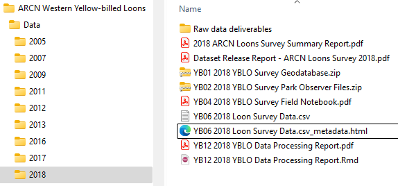
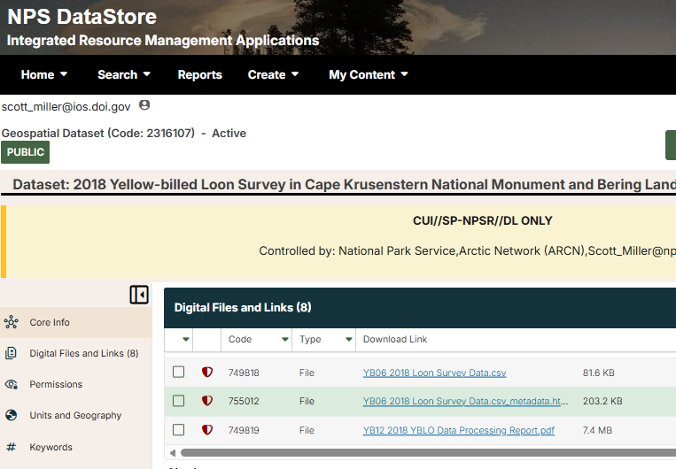

# Function to convert a data frame into SQL INSERT queries
DataFrameToSQLInsertQueries <- function(SourceDataFrame, DestinationTableName) {
# Helper: convert a single value to SQL literal
ToSQLValue <- function(x) {
if (is.na(x)) {
return("NULL")
}
if (trimws(x) == '') {
return("NULL")
}
if (is.character(x) || is.factor(x)) {
x <- as.character(x)
x <- gsub("'", "''", x)
return(paste0("'", x, "'"))
}
if (inherits(x, "Date") || inherits(x, "POSIXct")) {
return(paste0("'", as.character(x), "'"))
}
if (is.logical(x)) {
return(ifelse(x, "1", "0"))
}
# numeric / integer → leave unquoted
return(as.character(x))
}
# Get the source column names from the source data frame
SourceColumnNames <- paste0("[", names(SourceDataFrame), "]", collapse = ",")
# Build INSERT queries
InsertQueries <- lapply(seq_len(nrow(SourceDataFrame)), function(i) {
Row <- SourceDataFrame[i, , drop = FALSE] # preserve types
Values <- mapply(ToSQLValue, Row)
SQLValues <- paste(Values, collapse = ", ")
paste0("-- ",i,"\nINSERT INTO [", DestinationTableName, "](", SourceColumnNames, ")\nVALUES(",SQLValues, ");")
})
unlist(InsertQueries)
}
# START HERE: -----------------------------------------------------------------------------
# The DataFrameToSQLInsertQueries function converts a data frame (data, in example) to a series of SQL Insert queries
# The column names of the source data frame (data, in the example below)
# must exactly match the destination column names in the loons monitoring database
DestinationTableName = "SurveyData"
SQLFile = paste0(r'(C:\Temp\z)'," ",DestinationDatabase,"-",DestinationTableName,".sql")
SQL <- DataFrameToSQLInsertQueries(data,DestinationTableName)
SQLScript <- c(
paste0("-- SQL INSERT queries script generated by ",Sys.info()[["user"]]," on ",Sys.Date()),
paste0("USE [",DestinationDatabase,"];"),
"BEGIN TRANSACTION; -- COMMIT ROLLBACK -- Don't forget to commit or rollback or the database will be left in a hanging state.",
SQL
)
# Uncomment to write the INSERT queries to file
# writeLines(SQLScript, SQLFile)Data Management Lifecycle And Procedures
The YBLO monitoring team recognizes the importance of following a fastidious and disciplined data management life cycle to promote data longevity and informational quality over an anticipated term of decades.
This section covers the data management life cycle for the Yellow-billed loons monitoring program after data is collected. For field data collection procedures and methods follow the standard operating procedures in (Flamme and Miller (2018)) available from the Yellow-billed loons Project Reference in the NPS Data Store.
Collect data according to the YBLO standard operating procedures
Follow the data collection SOPs in the loons monitoring protocol and SOPs at https://irma.nps.gov/DataStore/Reference/Profile/2216938
Organize and re-name raw data deliverable files
Upon returning from a field survey the first task is to organize and re-name raw field data deliverables in the loons monitoring shared directory (O:\Monitoring\Vital Signs\Yellow-billed Loons\Data). Figure 1 shows an example of a well organized data directory.
File organization and naming procedures are in the Deliverables Schedule and personnel are expected to follow them closely. Doing so will assure future users know what is what, and will aid in backtracking data processing procedures if errors are discovered. Our goal is reproducibility and the highest data quality possible. Look over the Deliverables Schedule and/or familiarize yourself with how the previous year’s data files are named and organized in the loons monitoring files directory. These file names are recorded in the database so that users can back-track, following a chain of processing steps to raw deliverable files if problems are encountered in the future.

Figure 1. A well organized loon survey data deliverables directory. Raw data files are separate from final, processed deliverables. Filenames are tagged with their deliverable identifiers. Data processing and quality control scripts and summaries are included.
Process the deliverables for quality and logical consistency
There are no specific procedures for processing data quality, other than the suggestion to use a reproducible science platform such as R Markdown or Quarto, Python/Jupyter notebooks, etc. to document the procedures you undertook and data sources you used.
Putting effort into creating tidy data will make all the following data processing procedures easier. If you are not familiar with the concept of tidy data then please read Wickham (2014) (a fantastic, quick read that will make your life as a scientist much easier).
Look in prior year’s data directories at data processing scripts prefixed with ‘YB12’ to see how data were processed for quality and database integration.
Look for:
Missing or erroneous spatial coordinates
Missing or impossible Plot numbers
Incidental (non-Plot) observations
Extraneous (non-protocol mandated) wildlife sightings
Consistent and standard species codes
Missing counts, nest, pair or other poor quality records
Validate the data against a report, if available
Data processing scripts are a deliverable (YB12) and should be saved in the survey’s data directory and name similar to ‘YB12 YYYY Loon Survey DESCRIPTION.ext’. Example: YB12 2023 Loon Survey Data Processing Script.rmd.
Integrate the deliverables with the master loons monitoring database
Once the loon observations, lakes, plots and other files are processed you enter them into the loons monitoring SQL Server database. There are many methods to transfer data from deliverable files into a database. SQL Server Management Studio has a data import/export wizard. R and Python have packages and methods for moving data. You could also use Excel formulas to generate a series of INSERT queries. Data from 2005 - 2023 were moved via R scripts. Look for those scripts, prefixed with ‘YB12’ in the loons directories or References in Data Store. Modify the scripts as needed.
One easy way is to shape the dataset that is to be imported into the database such that each column is named exactly the same as the schema of the database’s SurveyData table. Then you can generate a script of SQL INSERT queries using this function:
Run automated quality control procedures and repair/document defects
Queries
The loons monitoring SQL Server database has numerous quality control tests that can be done. Views (queries) prefixed by ‘QC_’ are quality control views that will show potential errors. Use judgement, some results are warnings (Lake or Plot is NULL, for example) and not critical. Others show critical errors such as observations missing spatial coordinates.
Stored procedure
There is a stored procedure called spDataQualityReport that you may execute or open and run line by line to elucidate potential data quality problems. Run it by executing EXEC spDataQualityReport. This stored procedure is best executed with the results sent to text, rather than grids. See SSMS help.
Quality control scripts
The ARCN data manager has written numerous automated quality control and data summarization scripts in R Markdown and Quarto. [Put GitHub link here when updated.]
Preliminarily analyze the data -> Reprocess for quality if errors are further detected
The ARCN data manager has written numerous scripts in R Markdown and Quarto to generate quality control reports, data release reports and survey reports. These are available at [GitHub link goes here].
Certify the dataset
The loons monitoring database has three levels of certification to describe data quality.
The NPS Arctic Network applies a tiered approach to communicating data quality. Records are tagged according to three levels of data quality as described in Table 1.
Table 1. Data quality definitions. The CertificationLevel is an attribute of the database’s SurveyData table.
| Certification level | Definition |
|---|---|
| Raw | Raw data that have not undergone any processing for quality. |
| Provisional | Provisional records have undergone quality control checks, defects have been rectified and/or documented and the survey results are suitable for internal reports. Observations have not been certified for release by the principal investigator, or have not been validated with a report or published journal article. |
| Certified | Certified records have undergone rigorous quality control checks, defects have been rectified and/or documented and the survey results have been validated with a report or published journal article or have been approved for release by the principal investigator. Certified records are analytical grade. |
Validate the records against a report, if available, or request certification approval from the project leader. Once this is done update the loons database SurveyData.CertificationLevel attribute to ‘Certified’. Also change the CertificationDate to the current date and the CertifiedBy attribute to your name.
Publish the dataset
Important note on data publication: Loons monitoring data are considered sensitive data and protections are in place. Do not publish loons monitoring data publicly. See
Loons monitoring data are published in two ways:
| Dataset type | Public | Analytical grade | Description |
|---|---|---|---|
| Annual survey files | No | No | This dataset type consists of data files and documentation from an individual, annual loon survey. These data are archival grade and are not certified for analysis. They are retained in Data Store in case errors are detected, or clarification is needed in the future. |
| Certified cumulative dataset* | No | Yes | The certified, cumulative dataset is intended for analytical use. Each survey year data are processed for quality and appended into the master loons monitoring SQL Server database. Once data are certified new data and metadata files are exported and the Certified Dataset Reference* is versioned, modified, and the new files attached. |
*The link to this Data Store Reference is current as of this writing, but will change as the Certified Dataset Reference is versioned over time. Data Store points users from older versions to newer versions of datasets, so clicking the link shown will lead you to the latest version.
Annual survey deliverables publication
The raw and processed annual survey data deliverables are published privately in the IRMA Data Store (Figure 2). These files are not intended to be published to the public, but rather are archived for NPS use in case questions arise later on data or methodology. The best procedure to follow is to look at the previous year’s data in loons shared drive as well as the Deliverables Schedule and make sure all the files are named correctly and the deliverables are as complete as possible. From there go to the master Loons Project Reference in Data store and look at the previous year’s metadata and files. The easiest course of action is to clone last year’s Reference, modify the metadata, upload the newest files, and activate the clone as a new Reference. Be sure to link the new Reference as a Productof the master Project Reference so that it’s all tidy.

Figure 2. Example of an annual loon survey deliverables archived as a Geospatial Dataset in NPS Data Store. Annual survey files (see Deliverables Schedule and Figure 1.) are archived as private, NPS-Internal References in Data Store.
Certified dataset publication
Certified dataset. This dataset is cumulative. Each year’s data is appended to the loons monitoring master database and then the Dataset_Certified query exported to a CSV file and the Certified Dataset Reference in Data Store is versioned with the new file.
Review and revise the Standard Operating Procedures
If any methodologies have improved or changed significantly then update the SOPs.
Flamme, J. H. Schmidt, M., and S. D. Miller. 2018. “Yellow-Billed Loon Monitoring Protocol for the Arctic Network: Protocol Narrative Version 1.0.” Natural Resource Report NPS/ARCN/NRR—2018/1738. Fort Collins, Colorado: National Park Service. https://irma.nps.gov/DataStore/Reference/Profile/2256435.
Wickham, Hadley. 2014. “Tidy Data.” Journal of Statistical Software 59 (10): 1–23. https://doi.org/10.18637/jss.v059.i10.